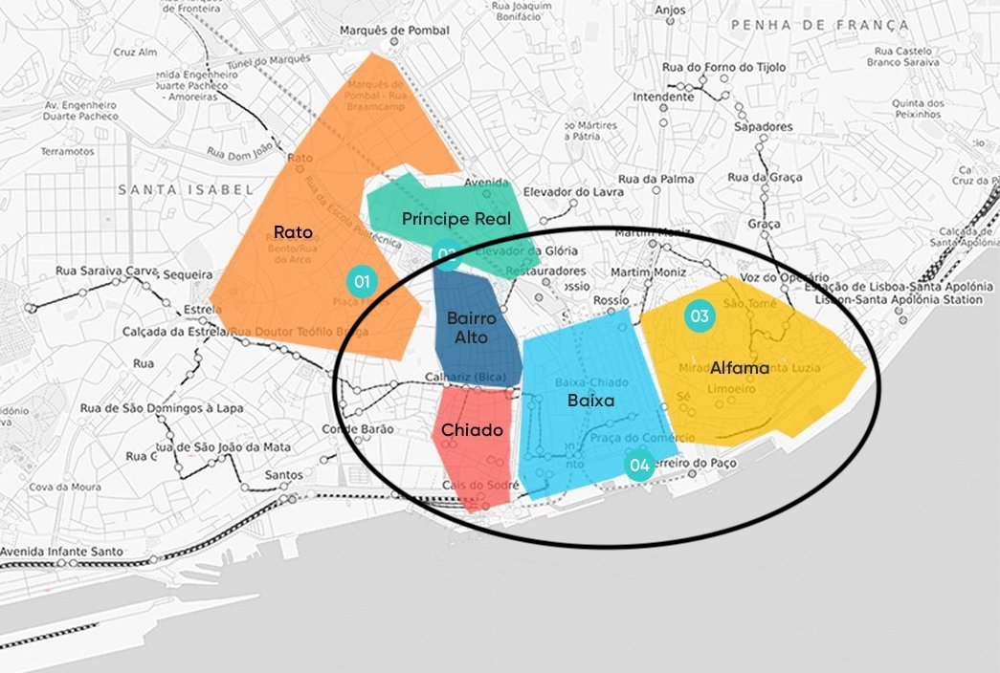

Day 1: Taking off (M:5/20) and Arriving in Lisbon (T:5/21)
I leave from the Minneapolis-St.Paul airport to Toronto, Canada. I hop on a connecting flight from Toronto to Lisbon, where I arrive the next morning. I will first explore the Alfama district, a very hilly coblestoned area with winding streets and the historic Moorish quarter. This district hosts many attractions such as the Castelo de Sao Jorge (the highest point in Lisbon where I will start my explorations), the Se (stands for Sedes Episcopalis) Cathedral, and the Museu do Teatro Romano (an old Roman ampitheatre). Lunch will take place after the Castelo de Sao Jorge, at the Miradouro de Santa Luzia, a small area housing cafes and wonderful hillside views of the river.
After touring the Alfama District, I will make my way to the Biaxa, Chiado, and Bairro Alto Districts (they are small and very close together) to check into my hostel (which has a ball pit!). I will start in Biaxa, which is considered the downtown of Lisbon. I may stop at a highly recommended ice-cream parlor, and then continue on to the Praca do Comercio, an old palace where King Carlos and his son were assassinated. The Lisboa Story Centre is near by and is an interactive museum that shows the history of Lisbon. The Lisbon Story Centre also gives you access to the Arco da Rua Augusta next door. Next would be onto the Nucleo Arqueologica da rua dos Correeiros, an underground archeological visitor site that hosts free guided tours in English. If time permits, I'll try to ride the Elevador de Snata Justa up to see the Convento do Carmo and possibly catch dinner there. At this point, I'd head back to the hostel to plan the next day further, update my mother (she's worried about the solo trip), upload photos, and go to sleep.